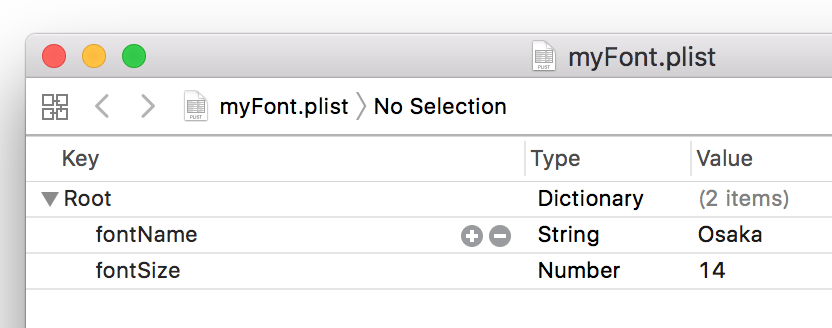

plist の保存と読み込み
plistを保存する
NSDictionaryオブジェクトを作成して書き出す。（Dictionaryクラスではない）
数値には基本数値型の値を指定することができる。
plistを読み込む
ファイルのデータをNSDictionaryオブジェクトとして読み込む。
Swiftでは一般的に辞書は Dictionry を使用するので Plistに読み書きするときは NSDictionary に変換する必要がある。
plistの拡張子
plistはXML形式のテキストファイルとして保存される。拡張子は何でも構わないが、.plist にしておけば、Xcodeで読み込んだ時、plist専用エディタに表示することができる。
